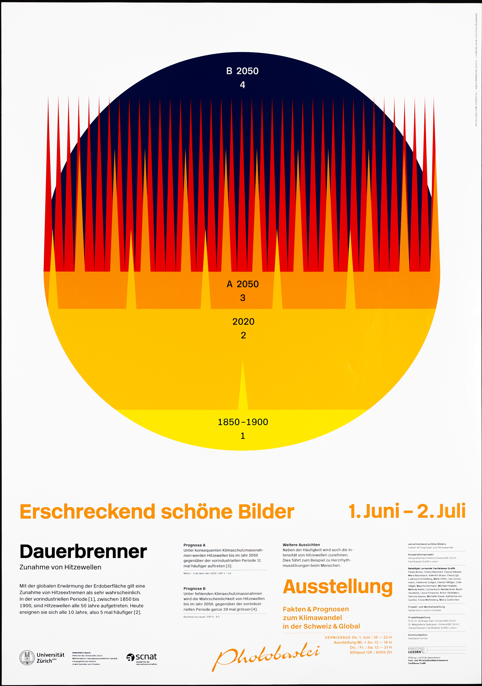
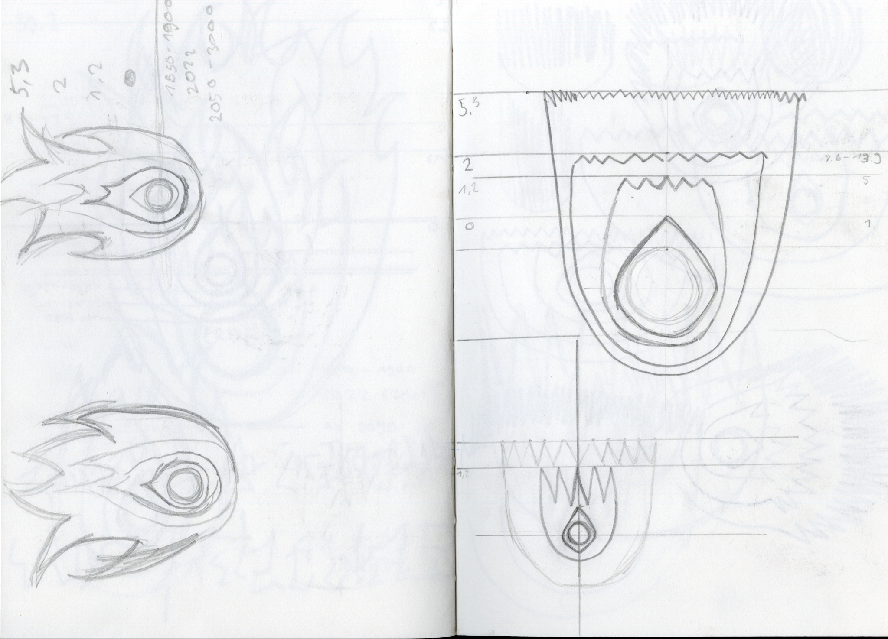
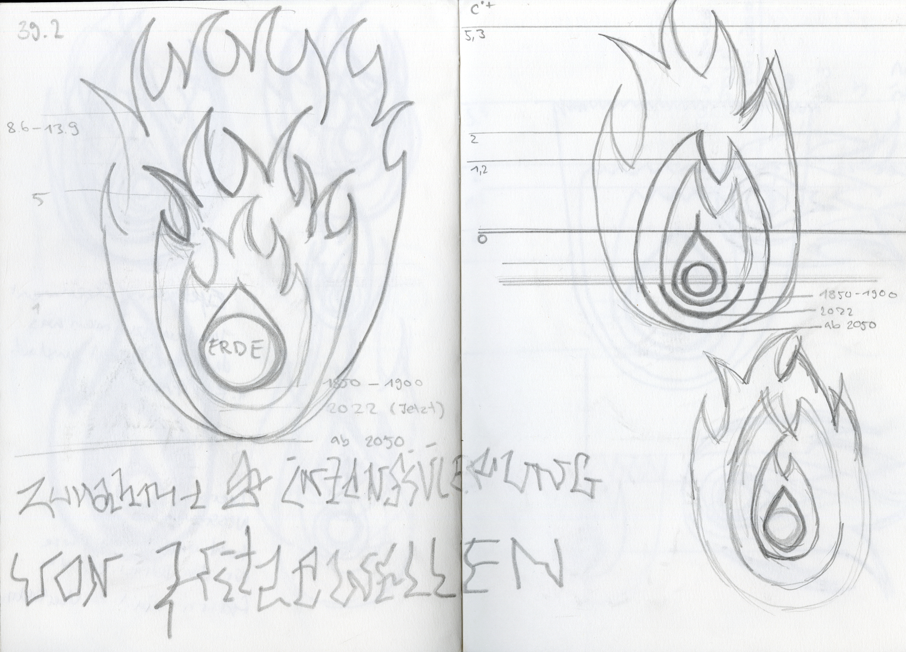
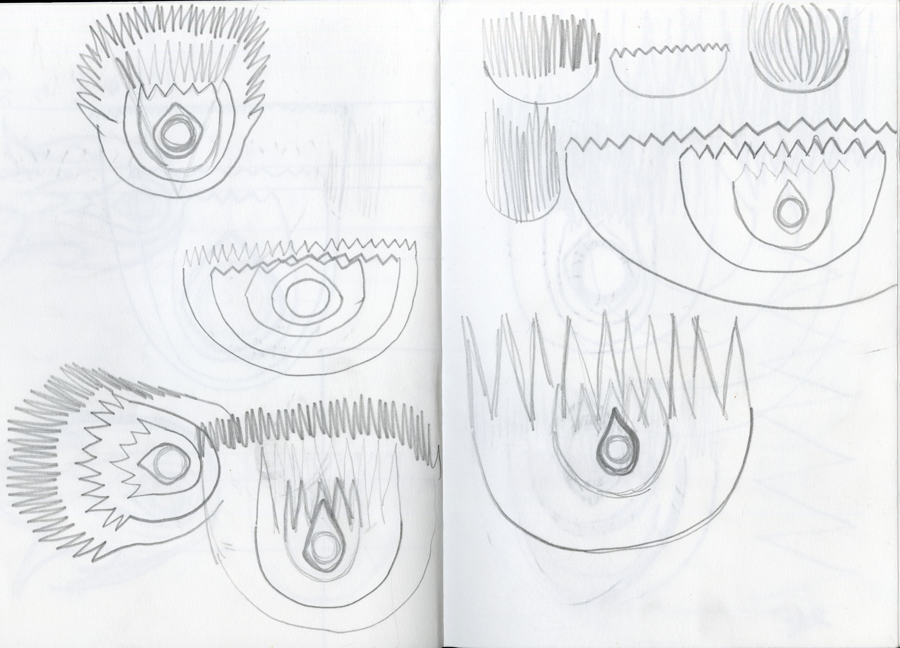
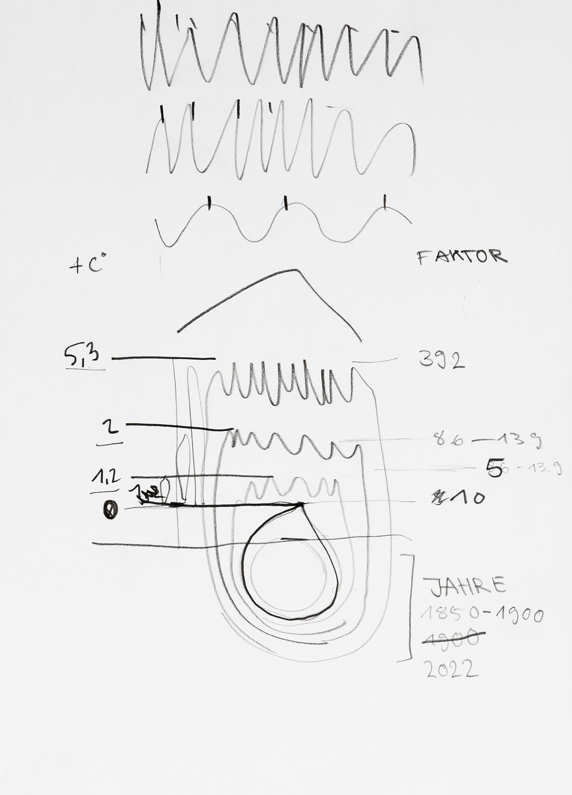

Diese intensiven zwei Wochen ehren Hans-Rudolf Lutz, ehemaligen Dozenten der Fachklasse Grafik. Den Arbeitstitel haben wir mit Dartpfeilen ermittelt, und ich traf die Hitzewellen. Es geht um Klimaprognosen, die wir in einem nachvollziehbaren Diagramm darstellten. Die Daten dafür haben wir von der UZH erhalten. Bei der Erarbeitung des Diagramms musste man einiges rechnen, um das Verhältnis korrekt darzustellen. Der Entwicklungsprozess hat mir Freude bereitet, weil es verschiedene Möglichkeiten gab und ich mich ausprobieren konnte. Dieses Projekt wurde mit einem Award von Junge Grafik ausgezeichnet.



